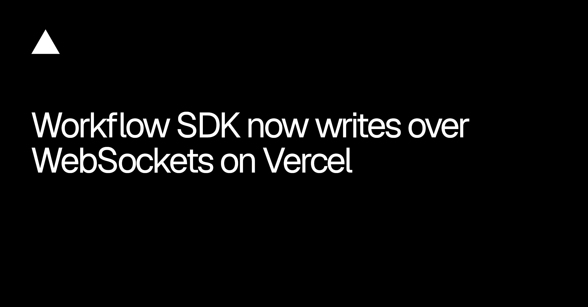
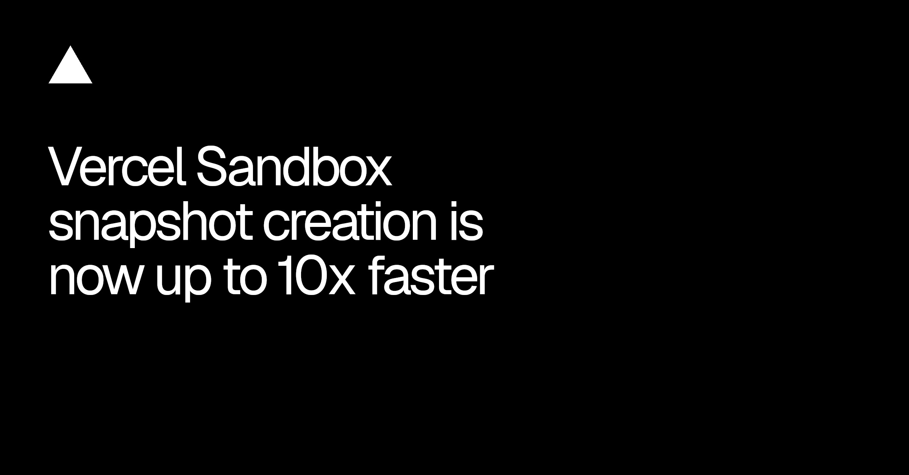
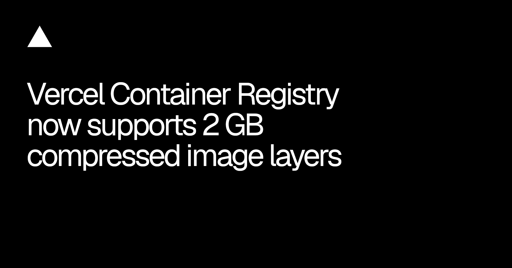
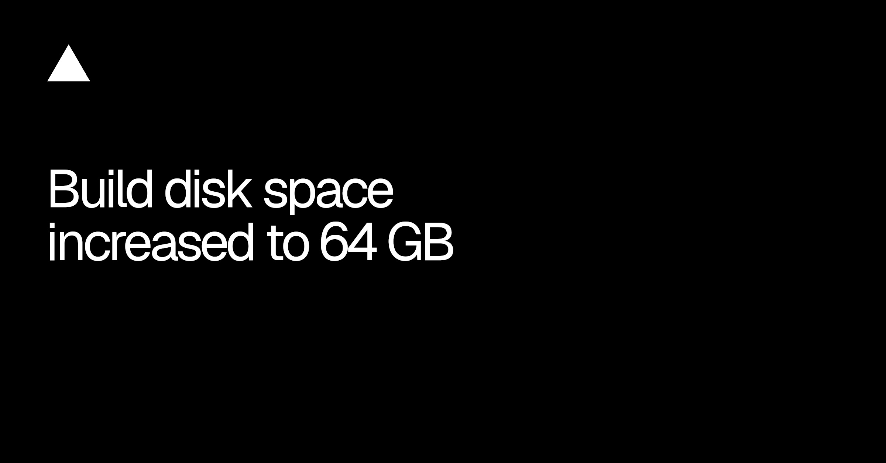
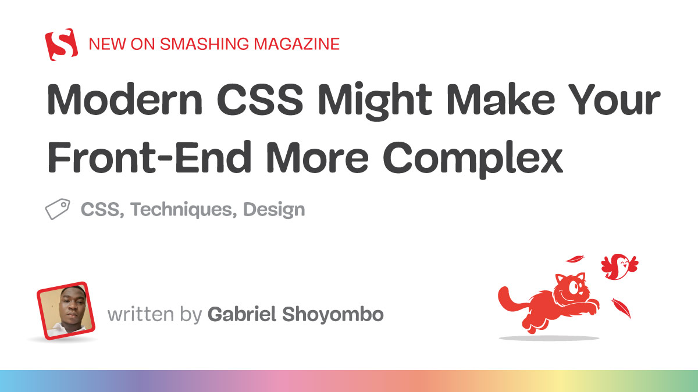
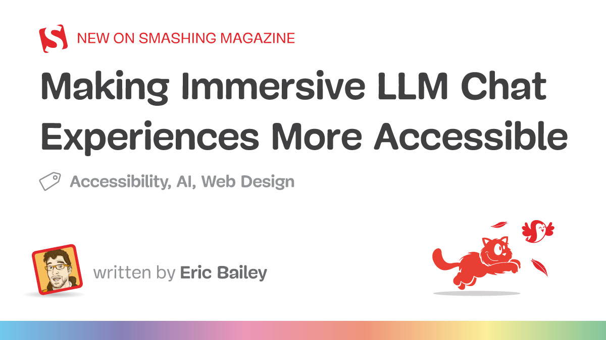
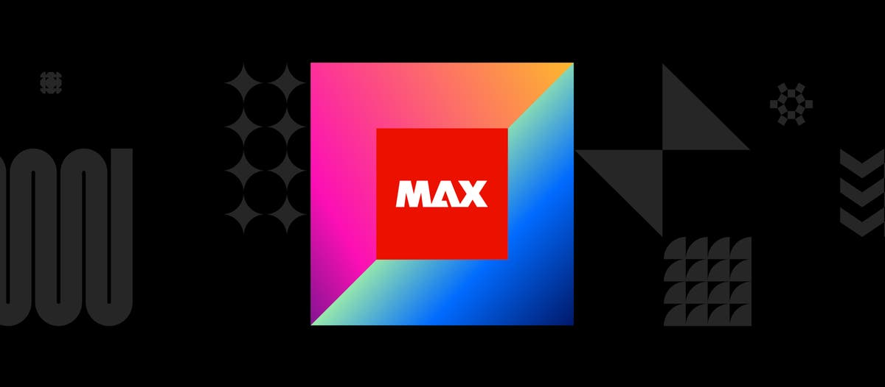
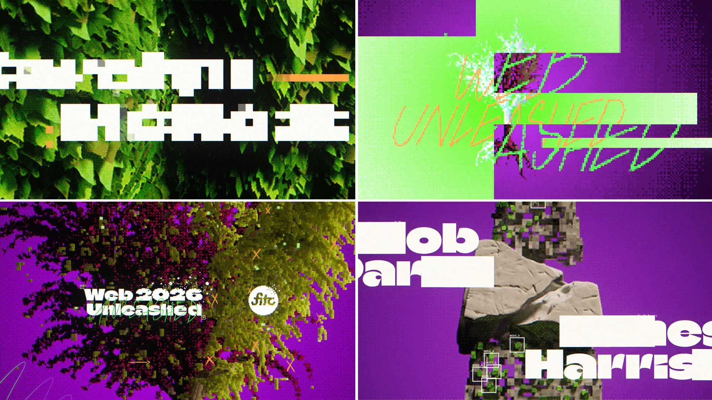

今天这批更新没有新的“画布魔法”，都在补生成之后的硬成本：流式输出要更稳，沙箱要更快复现，重型镜像与视觉回归要能顺利搬运，复杂交互还得有人验收可访问性。
Vercel 一天连发四条基础设施更新，看着像后端新闻，实际直接决定设计工程能不能高频跑预览、截图、视频与 agent 工作流。另一边，两篇前端文章把常见误区说透了：删掉 JavaScript 不等于系统更简单，聊天框能出字也不等于所有人都能用。今天的片头也很应景——Escafandra 没追求“完美 CG”，而是用像素、抖动和手绘纹理把不稳定感做成视觉规则。

workflow@5.2.0 起，event write 与 stream write 默认经 WebSocket 发送，升级依赖即可，不用改现有流式代码；已经在跑的 workflow 仍会留在原 deployment。Vercel 的 AI token 回放 benchmark 里，5.2.0 完整响应比 4.8.12 快 4.2 倍，且没有 chunk 延迟超过一秒。这是官方基准，不是本地实测。
速度真正影响的是“用户是否相信它还活着”。产品侧别只把 token 更快吐出来，还要补齐断线重连、工具调用中的等待态、取消和最终完成标记；否则 WebSocket 只会让一个模糊状态更快地闪过去。

Vercel 把 Sandbox snapshot 的创建中位数从 4.4 秒压到 0.4 秒以内，restore 的 p50 从约 500ms 降到 250ms；新快照自动生效，既有快照不会被后台重写。
这会让“每个分支一套可复现视觉环境”更现实：agent 改完 UI，立刻固化依赖与资产，再交给 Playwright、截图 diff 或人工复查。注意新旧 snapshot 格式并存，回归基线要写清创建时间，别把格式差异误判成页面性能变化。

Container Registry 的单个 compressed layer 上限从 500MB 提到 2GB，完整镜像仍可到 15GB；同时补上 public / cross-team repository、CLI 管理和 GitHub Actions OIDC 登录，需要 Vercel CLI 58.3.0 以上。
带 Chromium、FFmpeg、字体和模型的视觉 QA 镜像终于不用为了过 500MB 门槛硬拆得七零八落。上限提高不代表 layer 可以随便堆：浏览器、字体、模型和项目依赖仍应分层，否则每次只改一张截图，也要重推一大块二进制。

Basic 与 Standard build machine 的磁盘从 32GB 增到 64GB，和 Enhanced / Turbo 对齐；所有套餐自动生效，不加钱，也不需要改配置。
对设计工程最直接的是多浏览器包、视频帧、字体全集和截图 cache 不再那么容易互相挤爆。真正的验收仍要看峰值占用和清理日志；磁盘翻倍只能缓解失败，不能替代对临时文件、缓存命中与产物保留周期的管理。

Gabriel Shoyombo 把一个常见 PR 拆得很具体：用 container query、:has() 和 CSS 动画删掉几十行 JavaScript，单文件确实更短，但宽度来源、formatting context、cascade 与旧逻辑可能一起变复杂。文中的 5,000 行测试里，一个看似无害的 :has() 路径会牵动 5,001 个元素重算；放到 20,000 行，两个规则一次 toggle 约吃掉 31ms。作者也明确说这只是单机 Chrome 测试，数字不能直接外推。
文章最后的六问比“CSS 更现代”有用：谁拥有这个行为、作用域到哪里、cascade 怎么赢、旧实现删干净没有、真实负载测过没有、下一个人看不看得懂。设计系统升级 native CSS 时，把这六项写进 PR 模板，比继续比较代码行数靠谱。

Eric Bailey 讨论的不是右下角客服泡泡，而是 ChatGPT、Claude、Copilot 这类全屏聊天应用。文章把 landmark、焦点管理、live region、Control + F6 / F6 区域跳转和 inclusive user research 放回同一条体验链；即便 ariaNotify() 已有跨浏览器可用性，也提醒团队考虑辅助技术用户的升级迟疑与组织支持策略。
AI 聊天产品最容易犯的错，是只测“消息能不能生成”。真正的组件规格还要写清流式内容怎么宣告、停止按钮去哪、工具调用后焦点回哪里、侧栏与输入区怎样用键盘跨区。没有这些状态，模型再聪明也只是在给一部分人工作。

Adobe MAX 今天在 Miami Beach 开幕，线下会期为 11 月 10–12 日，线上直播为 10–11 日且免费；官方列出 200 多场 session，分七条 track，包含 Design / Imaging / Illustration 与 Video / Audio / Motion。开幕 keynote 在当地时间 9 点开始。
今天先把它当观察清单，不把 session 标题写成产品已发布。后续真正要核的是 release notes、可用地区、套餐权限、生成式功能的 credits 与失败是否收费；keynote 演示再顺，也不能替代这些交付边界。

视频：Framerate 播放器https://framerate.tv/embed/kgPSrL0I?primary_color=%2523ffffff&track_color=%2523ffffff&theme=minimal｜来源：Stash 文章https://www.stashmedia.tv/escafandra-studio-opens-web-unleashed-2026/｜制作：Escafandra Studio｜音乐 / 声音：Leo Grand
Escafandra 为 10 月底在 Toronto 举办的 Web Unleashed 2026 做了开场片头。团队前一支 FITC 片头偏手绘和模拟质感，这次故意换成数字语法，也没有追求 photoreal 3D：树叶与枝条保留插画纹理，空间里混入 voxel、pixel 与 dithering，Luis Mejia 把方向概括成“less perfect”。
片子好看的地方不在 glitch 数量，而在粗糙度有层级。黑白大字先把会议信息钉住，酸绿与洋红负责把森林、网格和人物切成不同深度；像素崩解只在转场和强调点出现，画面仍有足够安静区。2D 字体、3D 植被与低分辨率噪点没有争主角，因为它们共用同一套方块、抖动和错位规则。
下一条产品 hero 可以先做一张“失真预算表”：信息层保持锐利，空间层允许 voxel 化，转场层才开放 dithering 与位移；三层各选一个强度，不要把每个元素都做成故障艺术。飞书发布优先插入 Framerate player iframe，若 CLI 回读没有稳定落成，再降级为这张 2000×1125 制作画面，并保留播放器与文章链接。
11 月 9 日 Stash feed 只有一条新文章，因此今天不拿旧片凑“最新”。其余三条只保留去重边界，等制作方补 breakdown 再回来。
ariaNotify() 在真实 screen reader / 旧浏览器组合里的支持边界，以及全屏 chat 的 F6 导航实测。核验说明：Vercel、Smashing Magazine、Adobe MAX、Stash 与 Framerate 官方页面于 2026-11-10 回读。正文 8 张配图原始宽度为 1200–2400px，已逐张目视检查；飞书视频 iframe 将以最终 CLI section 回读结果为准。